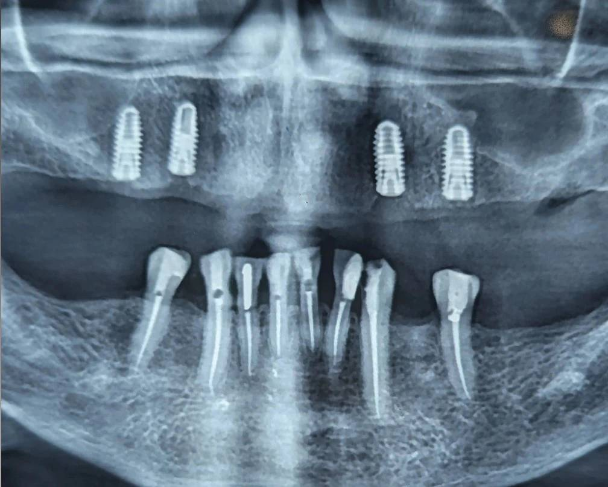

Chairside 11
نبود اکلوژن خلفی؛ مانعی پنهان برای اوردنچر فک بالا

-
بیمار با هدف انجام اوردنچر فک بالا مراجعه کرده بود.
ایمپلنتهای ماگزیلا قبلاً در مرکز دیگری قرار داده شده بودند و طرح درمان اولیه توسط من ارائه نشده بود.
-
در نگاه اول، تعداد ایمپلنتها برای اوردنچر قابل قبول به نظر میرسید؛
اما دو ملاحظه مهم باعث شد ورود به فاز پروتز پذیرفته نشود.
-
ملاحظه اول، ابهام در کیفیت جراحی و محل انجام درمان بود.
ایمپلنتها در مرکزی قرار داده شده بودند که از نظر نحوه انجام درمان و مجری آن، اطمینان کافی وجود نداشت.
در چنین شرایطی، ورود به فاز پروتز بدون قطعیت نسبت به پایه درمان میتواند ریسک پیشبینیناپذیری ایجاد کند.
-
اما ملاحظه اصلی، وضعیت اکلوژن بیمار بود.
در فک پایین اکلوژن خلفی مؤثری وجود نداشت و تماسها عمدتاً در ناحیه قدامی متمرکز میشدند.
-
در رستوریشنهای ثابت، اهمیت اکلوژن خلفی شناختهشده است؛
اما در پروتزهای متحرکی مثل اوردنچر این موضوع حتی حساستر است.
-
در نبود ساپورت خلفی، نیروهای فانکشنال بهطور عمده به ناحیه قدامی منتقل میشوند.
در اوردنچر ماگزیلا، این وضعیت میتواند باعث افزایش نیروهای نامطلوب شود.
-
در نهایت این شرایط ممکن است به شل شدن مکرر اتچمنتها، جدا شدن دندانهای آکریلی و شکستهای مکرر پروتز منجر شود.
-
بنابراین قبل از هرگونه درمان در فک بالا، لازم بود ساپورت خلفی در فک پایین ایجاد شود.
-
این هدف میتوانست از دو مسیر دنبال شود:
• قرار دادن ایمپلنت در نواحی خلفی فک پایین
• یا طراحی پروتز پارسیل برای بازسازی اکلوژن خلفی
-
در صورت انتخاب پارسیل نیز، ابتدا باید دندانهای پایه بررسی میشدند؛
و در برخی نواحی احتمال نیاز به بریج برای بستن فضاها و ایجاد پایه مناسب وجود داشت.
سپس طراحی پارسیل و ایجاد ساپورت خلفی انجام میشد.
-
بیمار تنها متقاضی درمان فک بالا بود و تمایلی به اصلاح شرایط فک پایین نداشت.
با توجه به اینکه انجام اوردنچر بدون ساپورت خلفی نتیجهای قابل پیشبینی ایجاد نمیکرد، ورود به فاز پروتز پذیرفته نشد.
-
این کیس یادآوری میکند:
اوردنچر موفق فقط به تعداد ایمپلنتها وابسته نیست؛
گاهی آنچه نتیجه درمان را تعیین میکند، نه در فک درمانشونده،
بلکه در اکلوژن فکی است که قرار است با آن کار کند.
محتوای این صفحه برای استفادهٔ آموزشی دندانپزشکان و دانشجویان دندانپزشکی تهیه شده است.